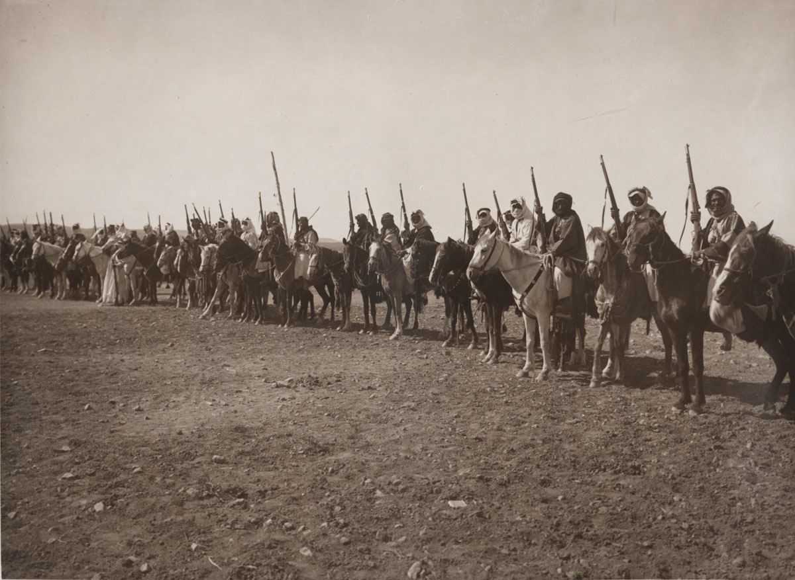
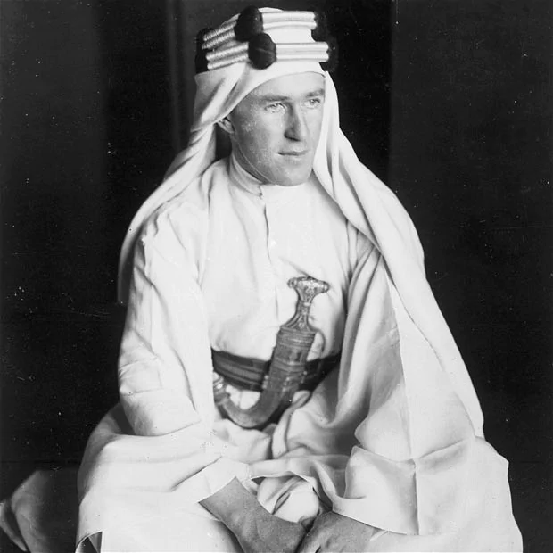

 With Russia out of the war, the remaining Austria-Hungarians continued to fight in the Italians. The German troops aiding them were relocated to the western front, making Austria-Hungary only having its own army to win the war in Italy. The second battle of the Piave River resulted in an Austro-Hungarian defeat, but the Italians had massive casualties. Austria-Hungary was falling apart already due to the desertion and Czechoslovakia, Croatia and Slovenia claiming independence. The final battle of the Italian Front was at the battle of Vittorio Veneto, which resulted in the Austro-Hungarians surrendering. Both sides suffered heavily from this war in the Alps.
In 1918, the Ottoman Empire was not doing too well. Most Ottoman efforts were put into the Caucasus that had mixed results. In the Middle East, they were not having any success due to an Arab Revolt and various hit and run attacks in Palestine. These attacks were led by the British military officer T.E Lawrence. He assisted in the Arab revolution, and helped in capturing Damascus. He would get a film made about him in 1962 that got critical acclaim. The Ottomans had a few more defeats that resulted in their surrendering in October. The Ottoman Empire would become modern day Turkey, with its other lands being separated into new countries controlled by France and Britain.